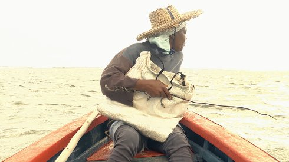

Sec Rouge

Kate Tessa Lee & Tom Schön
|
DE 2018 B+S+P+V: Kate Tessa Lee, Tom Schön – K: Kate Tessa Lee – T: Tom Schön – Mit Marie Louise Edouard, Marie Jeanne Azie, Marie Elydione Azie
|
Dienstag 16 okt 18.30 werkstattkino
Für Generationen von Fischerinnen auf Rodrigues Island war die traditionelle Kunst des Oktopusjagens eine Garantie für Selbstversorgung, Selbstbestimmung und soziales Prestige. Heute ist es ein sterbendes Metier, emblematisch für die instabile, expansive Strömung unserer Zeit. SEC ROUGE ist ein sinnbildliches filmisches Eintauchen in die fragile Lebensrealität der Oktopusjägerinnen.
Kate Tessa Lee Künstlerin und Filmemacherin, geboren 1982 in Curepipe, Mauritius, und lebt in Berlin. Nach ihrem Kunststudium an der Rhode Island School of Design, USA, entwickelte sie eine Serie von Kunst-Videos, die sich formal in einer Synthese aus Performance, fiktionaler Biographie und Film bewegen. Ihre gegenwärtige filmische Arbeit basiert auf Beobachtung, in der Realität und Fiktion verschmelzen. Die künstlerische Zusammenarbeit mit Tom Schön begann 2015. Tom Schön Filmemacher, Cineast und Filmtonmeister. 1969 in Speyer am Rhein geboren. Lebt in Berlin. Studium; Freie Kunst an der Hochschule für Bildende Künste Braunschweig; Meisterschüler der Filmklasse von Prof. Birgit Hein, 2009. Realisation mehrerer kurzer und mittellanger Filme an den Schnittstellen Experimentalfilm/Doku/Essayfilm. Mitbegründer und Programmleiter des Internationalen Film Festivals Grande Filiale, in Speyer, seit 2001. Künstlerische Zusammenarbeit mit Kate Tessa Lee seit 2015. |
| Filme Kate Tessa Lee Voice Appendages 2012 – Glass Flesh Cement 2013 – Amputation 2014 – Sec Rouge 2018 Filme Tom Schön I have a Question 2008 – August is in Summer 2009 – Gabi or Two Colors Yellow 2011 – Today for Instance 2013 – Sec Rouge 2018 |